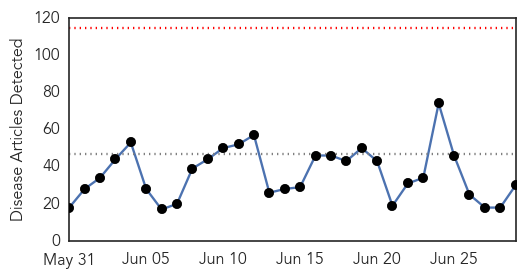
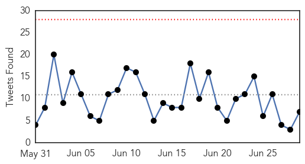
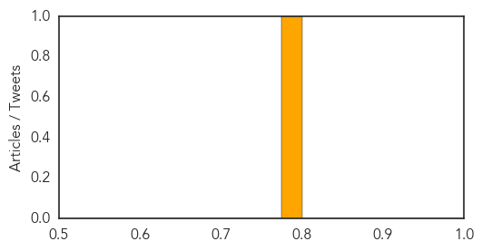

Ebola
30-Day Web Trend
0 alerts, 0 warnings

30-Day Twitter Trend
0 alerts, 0 warnings

Article Locations
Article Confidences

Top Articles:
- 1.000
- Ebola-hit Sierra Leone quarantines 31 health workers
- 0.999
- Is Sierra Leone sleep walking into another round of Ebola epidemic?
- 0.999
- Daytime Ebola curfew for Sierra Leone
- 0.999
- As Ebola Dies Down, Officials Turn to Preventing the Next Pandemic
- 0.999
- Ebola Back in Liberia: 1 Month, 20 Days After 'Free' Declaration
- 0.999
- Ebola: Sierra Leone suffers setback, two new cases recorded
- 0.999
- Ebola cases not slowing in Guinea, Sierra Leone
- 0.995
- Sierra Leone imposes three-week curfew
- 0.994
- Sierra Leone announces new curfew to halt Ebola
- 0.992
- Helping Guinean communities fight Ebola
- 0.992
- Sierra Leone announces new curfew to halt Ebola
- 0.990
- Liberia’s chief medical officer discusses Ebola with UBC
- 0.978
- New study verifies accuracy of rapid Ebola test
- 0.975
- Utilizing Local Governance in Post Ebola Recovery Drive
- 0.969
- Disease surveillance is crucial
- 0.967
- Researchers Have Successfully Treated MERS in Mice
- 0.962
- ICAO Commends Nigeria for Eliminating Ebola, Articles
- 0.934
- Researchers explore effectiveness of statins against Ebola
- 0.923
- New Study Verifies Accuracy of Rapid Ebola Test
- 0.897
- Page not found
- 0.888
- Are statins the secret weapon against Ebola?
- 0.867
- A survivor’s Ebola revenge mission « Awoko Newspaper
- 0.853
- Sierra Leonean intellectual engages National Coalition of Independent Scholars Conference
- 0.801
- Sierra Leone urged to get tough on tax to repair battered health system
- 0.793
- United Nations Ebola Outbreak Update June 2015 – 35th Edition - Sierra Leone
- 0.753
- COMMITTEE ON TRANSPARENCY VISITS AIRPORTS AUTHORITY
- 0.746
- Televised Ebola news coverage influences social media panic
- 0.707
- How to Win the War Against Infection, Inflammation, Disease and Immunity
- 0.685
- After Ebola, understanding health care needs among rural Liberians
- 0.613
- After Ebola, understanding health care needs among rural Liberians
Top Tweets:
- 0.874
- After Ebola understanding health care needs among rural Liberians - Medical Xpress http://t.co/wxMcl4FWnH ebola EVD
- 0.843
- How can governments better respond to new Ebola cases in West Africa?
- 0.772
- Running A Business In West Africa After Ebola: A Lesson In Entrepreneurial Agility - Forbes http://t.co/ybsUbGkm69 ebola EVD
- 0.642
- New study verifies accuracy of rapid Ebola test - Medical Xpress http://t.co/9fvTwppUtV ebola EVD
- 0.622
- Assembly of the Ebola Virus Nucleoprotein from a Chaperoned VP35 Complex http://t.co/wWQaLn1sSJ
- 0.610
- Rapid test for Ebola developed by Cardiff firm BBI - WalesOnline http://t.co/BWkD89e4oI ebola EVD
- 0.600
- ICAO Commends Nigeria for Eliminating Ebola - THISDAY Live http://t.co/0Wb8Ccs8Qa ebola EVD
Bubonic Plague
30-Day Web Trend
1 alerts, 0 warnings
30-Day Twitter Trend
0 alerts, 0 warnings

Article Locations

Article Confidences
Top Articles:
Top Tweets:
-
No tweets found for Jun 29, 2015